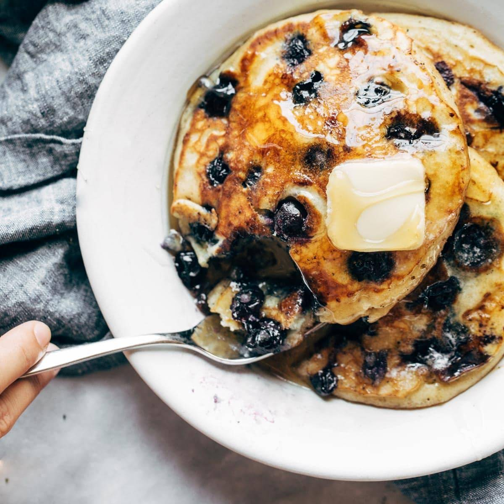

Bluberry Pancakes

Description
These Blueberry Pancakes will melt in your mouth. These are some of the best
pancakes out right now. Its great for early morning breakfast, brunch idea,
or even a late night snack.
Once youve tried these pancakes you wouldnt want to try any other. Its the
fluffiest pancakes you will ever try.
Ingredients
- 3/4 cup milk
- 2 tablespoons white vinegar
- 1 cup flour
- 2 tablespoons sugar
- 1 teaspoon baking powder
- 1/2 teaspoon baking soda
- 1/2 teaspoon salt
- 1 egg
- 2 tablespoons melted butter
- 1 cup fresh blueberries
- butter for pan
- Maple Syrup
Steps
- Mix the milk and vinegar and let it set for a minute
- whisk dry ingredients together. Whisk the egg, milk, and melted butter into dry ingredients until combined
- Heat a non stick pan over medium heat. Melt a little smear of butter in the pan
- Pour aobut 1/3 of batter onto the hot skillet and spread it flat like.
- Arrange a few blueberries on top. Cook until you see lttle bubbles on top and the edges starting to firm up
- Flip and cook for another 1-2 minutes until pancakes are sky high fluffy
- Serve with butter and maple syrup and enjoy the fluffies pancakes ever